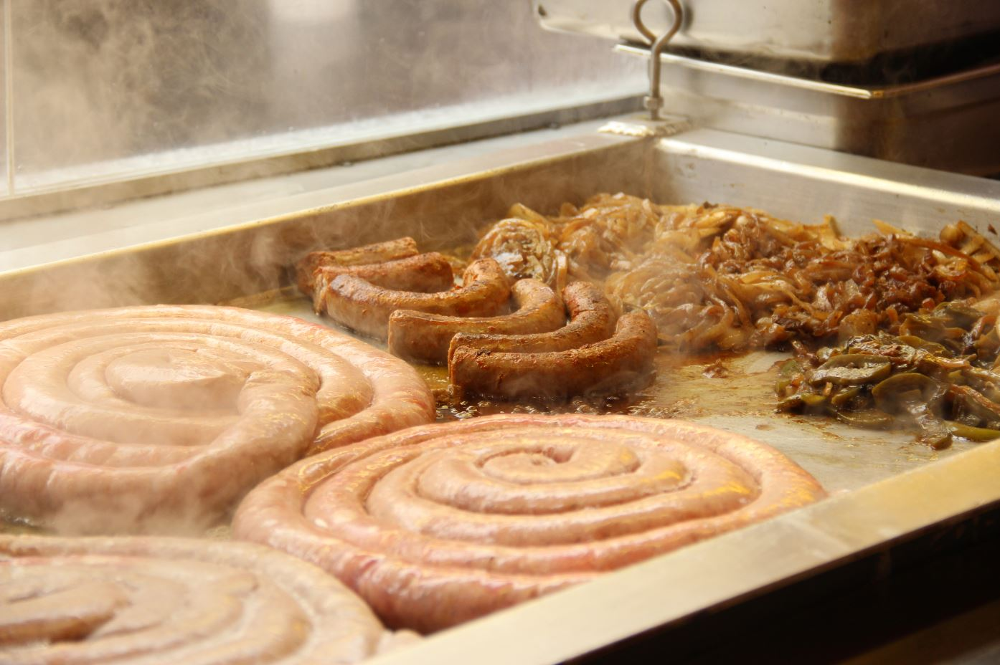

Participating Vendors
Food Vendors
- B&B Kettle Korn
- Bella pizza
- Ben & Jerry's
- Blooming Onion
- Curly Fries
- Camel Apples
- Collegetown Crepes
- Dondee's Fish 'n Chips
- Fresh Lemonade
- Funnel cakes
- Gorgers Taco & Subs
- Hot Candied Apples
- Island Cow Ice Cream
- Kettle Corn Shop
- Lao Village
- New Delhi Diamonds
- New York Almond Company
- On The Street - Greek Cuisine
- Pumpkin Funnel Cake
- PDR's Mac'n Cheese
- PDR's Sausage & Dogs
- Sangam Restaurant
- Silent City Coffee
- Star Truck
- Taste of Thai
- Taste of Thai Express
- Tellez Mexican Catering
- Tibetan Momobar
- Travelers Kitchen - Potato Pancake
Farmers
- AppleGrove farm
- Ba-Li Cravings
- Baker's Acres
- Comics For Collectors
- Cornell Orchards ISOHO
- Laughing Goat Fiber
- Little Grey Bakery
- Littltree Orchards
- Maple River Syrup company
- Teeter's Farm
- Tompkins county 4-H Exchange Club
- Tucker's Catering
- Walter Osip
- Ward's Maple Products
Wine and Beer Vendors
- Ashley Lynn Winery
- Bandwagon Brewpub
- Bellwether Hard Cider
- whitespace
- Cortland Beer Company
- Daring Drake Farm &
Blackduck Cidery - Eve's Cidery
- Montezuma Winery
- Six Mile Creek Vineyards
- Thousand Islands Winery
- whitespace
Exhibitors
- Barried Treasures
- Christian Science Reading Room
- Field & Stream
- Finger Lakes School of Massage
- Indigo Moon
- Ithaca Family Chiropractic
- Mid-Atlantic Waterproofing
- Simply Alexis Photography
- whitespace
Handmade Artisans
- Art on You
- BeJeweled
- Bible Wick Candles
- Bloom
- Breezeland Boutique & Bella Vanca Designs
- Captivate by Erica
- Cayuga Botanicals
- Cloz's
- Colin D. Young Photography
- Dave's Art Den
- dna jewelry designs
- Drake Hill Woodworking
- East Street Tins
- EDD Paper Creations
- Eight PM Designs
- F. Oliver's
- Family Jewelz
- Festive Face Painting
- Festive Face Painting
- forclaudiasssayke
- Four Leaf Soap LLC
- Fudge Lady
- Gayane's Gifts and Crafts
- Golden Hands Design/Cloud 9 Jewels
- Helenas Organic Garden-Nature's Apothecary
- Hen's Teeth Primitives
- Hooked Productions
- HRLMS Creations
- Imaginative Creations
- Katie Vaz Design
- Kingsley Street Artisan Soaps
- Laurel O'Brien
- Leather & Lace
- Luna Sea Trading
- Metal Magic
- Michelle DaRin Jewelry
- Moonlight
- Patricia Originals
- Rose Gottlieb
- S & J Woodcrafts
- Schoolyard Sugarbush
- Second Season Mittens
- Seneca Cottage Fudge Kitchen
- Shaman's Crossing
- Shelley Murphy
- Silver Serenity Design Studio
- Silver-Man
- Simply Divine Details
- Southwest Expressions
- Spinnin' Threads
- Stone Arch Farm
- Sugarhill Farm
- Sunshine's Creative Designs
- Surprenant's Berry Farm
- The Art and Found
- The Memorable Image
- What the Fork?
- Whisker Biscuits
- whiskeysourproductionss
- Wildflower Graphics